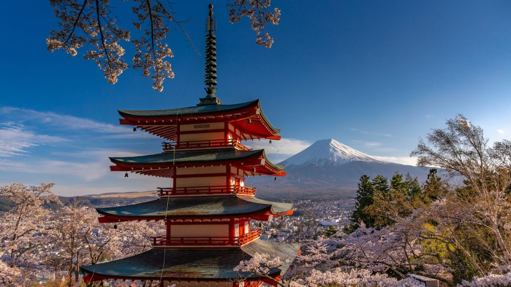
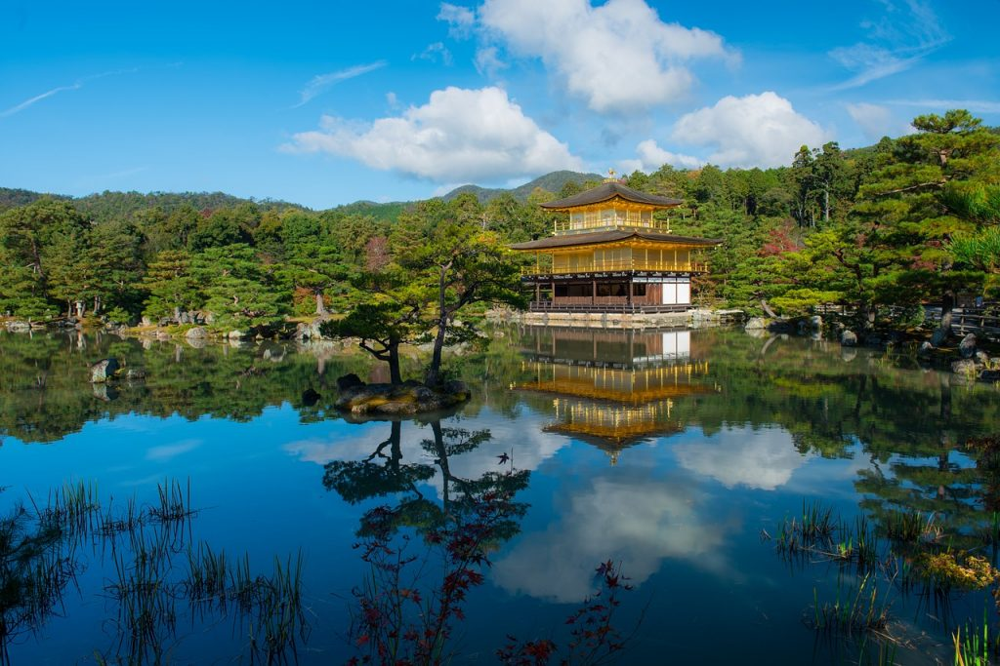
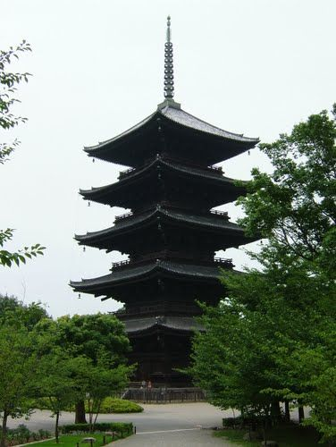
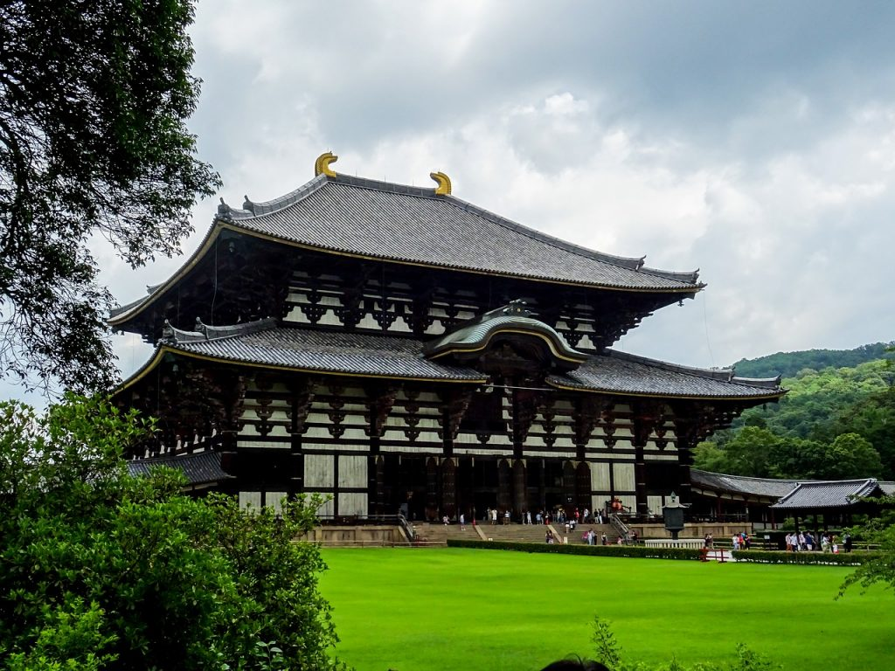
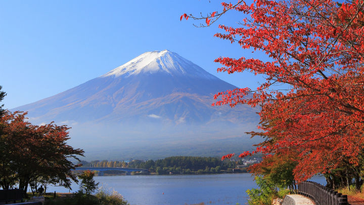

"𝓥𝓮𝓲 𝓻𝓮𝓬𝓾𝓷𝓸𝓪ș𝓽𝓮 𝓭𝓪𝓬ă 𝓾𝓷 𝓽𝓮𝓶𝓹𝓵𝓾 𝓮𝓼𝓽𝓮 𝓿𝓮𝓷𝓮𝓻𝓪𝓽 𝓲𝓶𝓮𝓭𝓲𝓪𝓽 𝓬𝓮 𝓿𝓮𝓲 𝓭𝓮𝓼𝓬𝓱𝓲𝓭𝓮 𝓹𝓸𝓪𝓻𝓽𝓪."
Oricât de umblat ai fi prin lume, Japonia te va surprinde la fiecare vizită. Șocul cultural provocat de futurism poate fi alternat cu o vizită în trecut, în Japonia tradiţională, prin simpla vizită a unor temple

✿ Templul Kinkaku-ji, Kyoto
Cel mai frumos templu din Kyoto, dacă nu chiar din ţară, este Kinkaku-ji (Pavilionul de Aur), ale cărui etajele sunt acoperite cu foiţă de aur.
Pavilionul este aşezat la marginea unui lac, iar reflecţia lui o poţi admira în mai toate ilustratele turistice.

✿ Pagoda de la To-ji, Kyoto
Kyoto e locul unde redescoperi Japonia geishelor şi a samurialor, cea pe care probabil că o cunoşti din filme.
Aici, modernismul nu a pus încă stăpânire pe oraş, fiind cel mai apropiat de imaginea epocii Edo.
Aşa că nu e de mirare că în Kyoto există 1.500 de temple budiste şi 400 de altare shintoiste.
Simbolul Kyoto-ului este însă pagoda To-ji, cu cele cinci etaje care se înalță 55 de metri deasupra oraşului; fiind cea mai înalta pagodă din lemn construită vreodată în Japonia.

✿ Templu Todai-ji, Nara
În Nara, oraş aflat în Patrimoniu Universal UNESCO, eşti înconjurat de căprioare cerşetoare pe care le poţi hrăni cu biscuţi cumpăraţi din grădina templului Todai-ji.
Cu această ocazie vizitezi şi cel mai mare templu de lemn din lume, unde se află statuia Marelui Budha (Daibutsu).
Mai exact, cea mai mare statuie din bronz care îl reprezintă pe Budha, având o înălţime de 16 metri şi cântăreşte vreo 500 tone.
Intrarea în templu se face prin poartă Nandaimon, păzită de nio, două statuete fioroase, care îi reprezintă pe gardienii împăratului.
În interior, măreţul Budha tronează deasupra unui piedestal din 56 petale de lotus (care şi-au păstrat gravurile originale) şi te binecuvântează cu mâna dreaptă.
Templul Todai-ji a fost construit în anul 743 dar, ca mai toate templele din Japonia, şi acesta a ars de câteva ori şi reconstruit.

✿ Muntele Fuji
Facand parte din cultura si traditia Japoniei, Fuji San - Muntele Fuji este cel mai inalt munte al Japoniei facand parte alaturi de muntii Tate si Haku din trioletul muntilor sfinti ai Japoniei. Fuji avand un con simetric acoperit de gheata si zapada, este unul dintre cel mai fotografiate obiective turistice naturale ale Japoniei si este un binecunoscut loc de pelerinaj in special in perioada de inflorire a ciresilor.